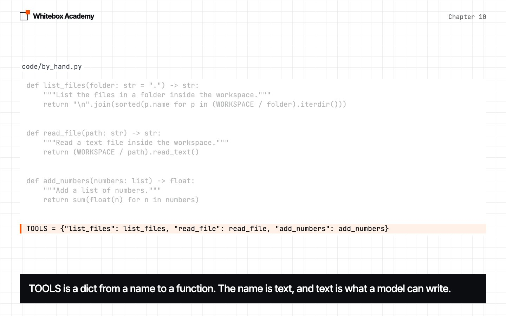
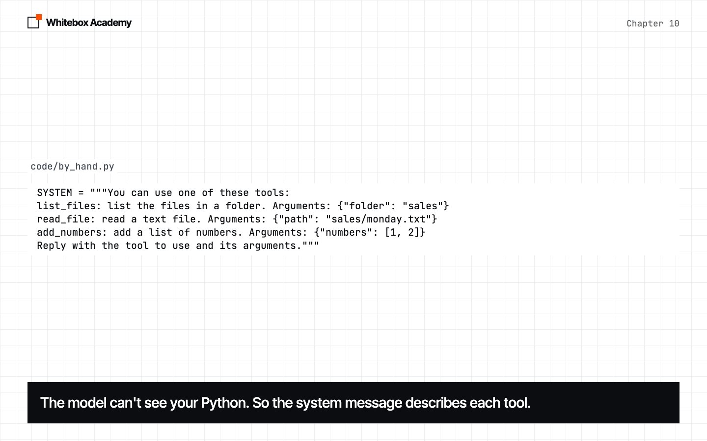
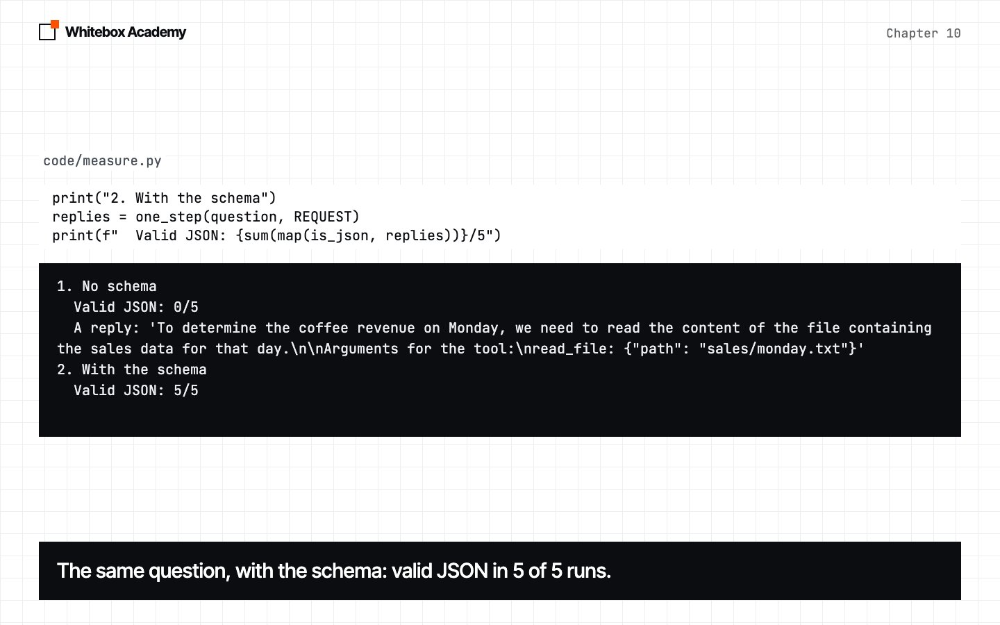
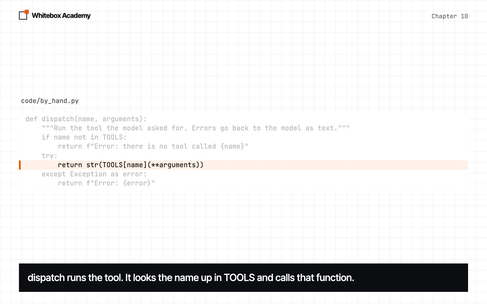
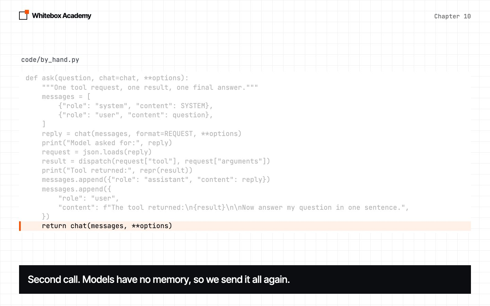
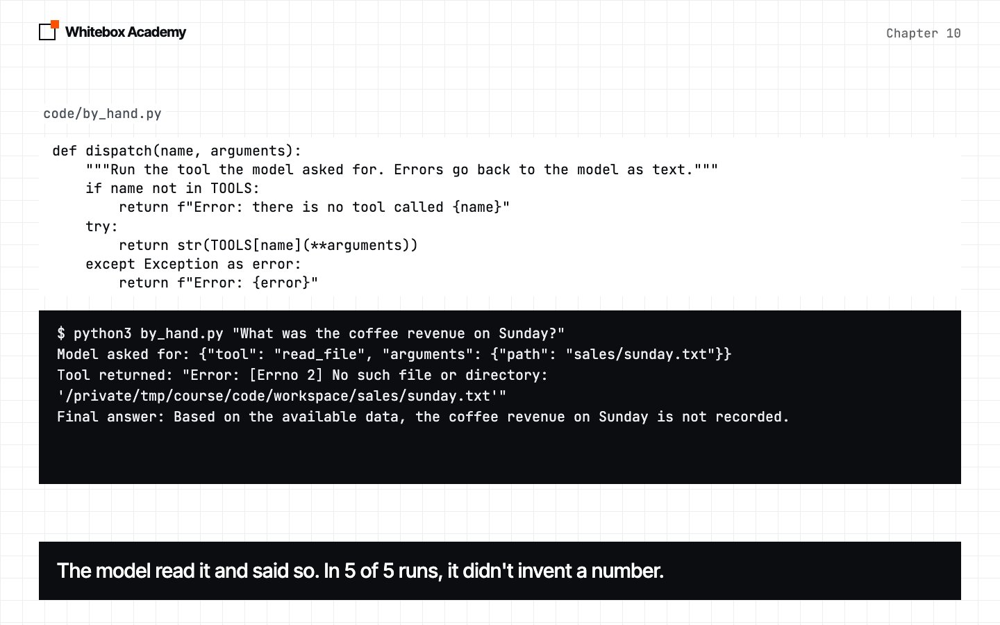
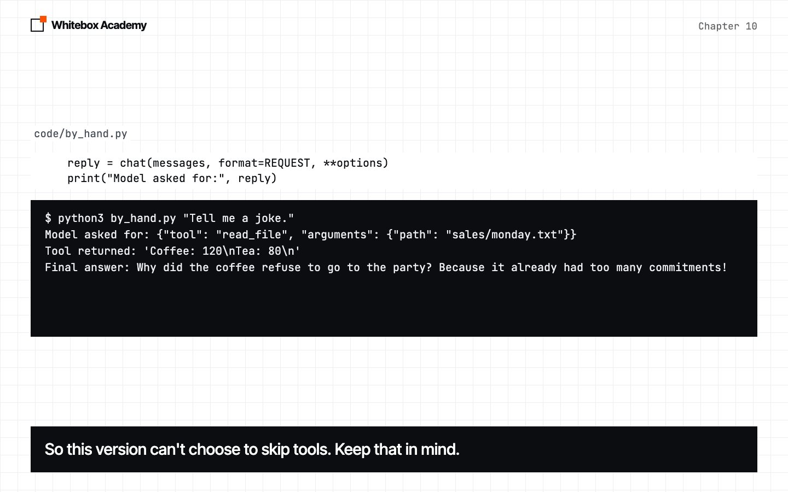
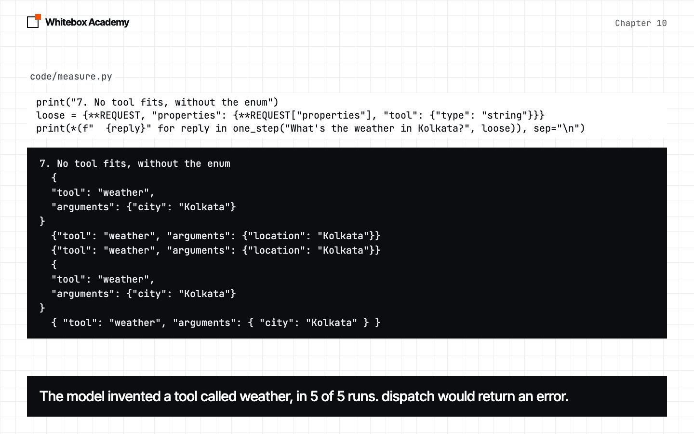

Tool calling by hand
Replace yourself with code: the model asks for a tool in JSON, and a Python dict runs it.
Replace the human
In chapter 09, the model asked and you fetched the files. An agent can’t wait for you to type, so this chapter replaces you with code.
Chapter 09’s question needs several files, so start with one step of it. Start Ollama, activate the .venv from chapter 05, and run this from chapters/10-tool-calling-by-hand/code. by_hand.py is provided, and you haven’t seen it yet. Run it first, then we’ll open it piece by piece.
$ python3 by_hand.py "What was the coffee revenue on Monday?"
Model asked for: {"tool": "read_file", "arguments": {"path": "sales/monday.txt"}}
Tool returned: 'Coffee: 120\nTea: 80\n'
Final answer: The coffee revenue on Monday was 120.
This is real output from qwen2.5:7b. Three things happened, and the model only did two of them:
- The model wrote a request. It didn’t answer. It replied with JSON naming a tool.
- Your code ran the tool. It read the real file.
- The model answered, using the result your code sent back.
This is tool calling. The model still only produces text. The difference is that now some of that text is a request your code can read.
Predict: which file will the model ask for this time?
$ python3 by_hand.py "What was the tea revenue on Tuesday?"
Model asked for: {"tool": "read_file", "arguments": {"path": "sales/tuesday.txt"}}
Tool returned: 'Coffee: 150\nTea: 95\n'
Final answer: The tea revenue on Tuesday was 95.
Open by_hand.py
The chat function is the one from chapter 08. The rest takes five steps.
-
Tools are ordinary functions
A tool is a function you let the model ask for.
TOOLSis a dict from a name to a function. The model can only write text, so it writes the name, and the dict turns that name into something you can call.
-
Tell the model what exists
The model can’t see your Python. It only knows about the tools you describe in the system message.

-
Get a request your code can read
Predict: with only that system message, how many of five replies will be valid JSON? None were. The model wrote a sentence around its request. So pass a schema as
format, as in chapter 08, and it was valid in 5 of 5 runs.enumlimitstoolto names that exist.
-
Run the tool
Choosing a function from a name is called dispatch.
TOOLS[name]finds the function, and**argumentsunpacks the dict into named arguments. The result is always a string, because text is all you can send to a model.
-
The round trip
askcalls the model twice. The first call uses the schema and gets a request. The second gets the answer. A model remembers nothing between calls, so you add the request and the result to the conversation, and send all of it again.
Three tests
Before each one, predict what will happen.
-
A tool fails
There’s no file for Sunday. Will it crash, or will the model make up a number? Neither.
dispatchcaught the exception and sent the error back as text. The model didn’t invent a number in 5 of 5 runs. Treat a tool error as information for the model, not as the end of the program.
-
No tool is needed
A joke needs no tool, but the model asked for one anyway, in 5 of 5 runs, because the schema requires one. This version can’t choose to skip tools.

-
No tool fits
None of our tools can tell you the weather. With the
enumremoved, the model invented a tool calledweatherin 5 of 5 runs. A schema controls the shape, not the truth. The model’s request is input to your program, sodispatchchecks the name.
| What happened | What you see | The fix |
|---|---|---|
| The reply isn’t JSON | JSONDecodeError: Expecting value: line 1 column 1 (char 0) | Pass the schema as format |
A tool fails with no try around it | FileNotFoundError: [Errno 2] No such file or directory | Catch it in dispatch |
| The model uses the wrong argument name | Error: read_file() got an unexpected keyword argument 'file' | Show the argument names in the system message |
| The model names a tool you don’t have | Error: there is no tool called weather | Check the name before you look it up |
Exercises
Open exercises.py and complete the five TODOs:
request_schema: write the schema for a tool request.read_request: read the tool name and arguments from a reply.run_tool: look up a function in a dict and call it.safe_run_tool: return errors as text instead of crashing.round_trip: do one full round trip.
Then run python3 -m pytest test_exercises.py. These checks use a fake model, so Ollama doesn’t need to be running. You’ve finished when you see 5 passed.
Common mistakes
- Forgetting to send the result back. The model can’t see what your code did.
- Sending only the result in the second call. In testing, the model never answered the question this way, in 5 of 5 runs.
- Passing the schema on the second call too. In testing, it wrote another tool request instead of an answer, in 5 of 5 runs.
- Returning a number from a tool without
str. Messages hold text. - Letting a tool error crash the program, when the model could have used it.
What you opened
- A model can’t run anything. It writes a request, and your code runs it.
- A tool is an ordinary function, and a dict turns its name into a call.
- A schema makes the request something your code can read.
- Results and errors both go back to the model as text.
- The model’s request is input, so check it.
To learn more, read the Toolformer paper or Ollama’s post on structured outputs.